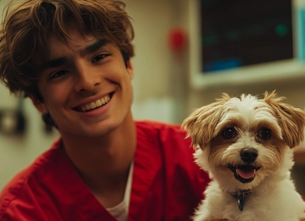
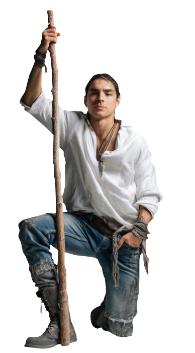
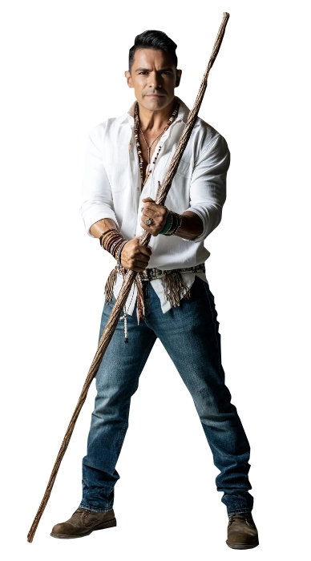
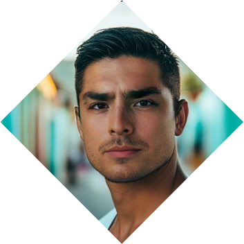
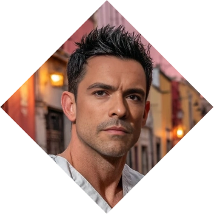
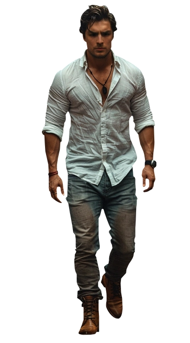

Antonio Campos
Antonio Campos
The Healer
Antonio Campos, a tenacious individual known for his unwavering loyalty and an indomitable spirit, has embarked on a journey to protect and serve the greater good. Tasked with upholding the universal balance, Antonio's origin within the enigmatic Sagittarius Society has bestowed him with unique abilities, making him a formidable defender of cosmic realms. Life itself, unbound and exuberant, represents this kid, a shapeshifter destined to become a warrior for nature.
His story is intertwined with destiny, as a vital addition to the Sagittarius Society, beckoned into the fold by Addison and Adan. Within this group, his unwavering loyalty and unyielding resolve were recognized, and he now stands as a guardian of nature. Antonio's pursuit of equilibrium in the face of galactic challenges is a testament to his character and the legacy of the Sagittarius Society. His unshakable devotion to the cosmic cause defines him as a protector of Life.❧
Plot Hooks.
Nurturing, Healing, Supporting, Plant and Animal control. He's the most adept at it. Smut wise, anything that has to do with body modification (never fully getting into the grotesque, though) he's gonna be there. Size modifcation, himbofication, alteration, shape shifting, role playing and knotting are some of his kinks.Signature Motif.
Anime. When he was a young boy he used his magic without guidance, which led him to suffer the Paradox on his body, getting sick constantly until he learned how to use his power. During that time he watched all of Naruto, One Piece and Dragon Ball (because it was the only thing available in open TV broadcast).Perfect for...
Puppy love, young love, healing love and romantic hope as well as monster fucker threads. If you are looking for a romantic guy who will make your guy feel good, try Toño. He is a great boyfriend and even better if you want it with a side of furry.Goal
Recovery.
In the past, Toño suffered the backslash of the Paradox in his own body as his Avatar was painfully awakening. His health was heavily deteriorated until he was found by the Verbena leader of Mexico, who trained him. Having understood this pain has made him heavily empathetic of others, seeking to alleviate and help them.
obstacle
Disbelief.
After the events of Mexico Maxico, Toño suffered a big case of distrust and paranoia, since he was betrayed terribly by his best friend. Little by little he opens up and trusts, but depending on where in his personal story you want to play with him, you'll find that he's no one easy to open up or be vulnerable around others.«¿Serán los Dioses Ocultos o serás tú?»
Personal Data
⭮


Antonio Campos Suárez
Name
28
Age
09/Dec/1995
DOB
Verbena
Sect
Black & Curly
Hair
Brown
Eye color
Lifeweavers
subgroup
Latino
Ethnicity
Mexican
Nationality
Recognized (I)
Status
1.75m
Height
83 kg
Weight
Spanish and Nahuatl
Languages
Male
Gender
Homosexual
Preference
College Student, Veterinary Major
Profession
Top
Position
7" / 4.5"
length / Girth
Diego Tinoco
Faceclaim
Atlacaplasol
True Name
ESTP
MBTI
Character sheet
Attributes
Distinctions
skills
Paradigm
We're all Gods in Disguise

Nature
Caregiver
Demeanor
Activist



⭮
Compassionate
Caring
Empathetic
Selfless
Kind-hearted
Insecure
Overly trusting
Vulnerable
People-pleasing
Self-sacrificing
Caring
Empathetic
Selfless
Kind-hearted
Insecure
Overly trusting
Vulnerable
People-pleasing
Self-sacrificing
Passionate
Proactive
Courageous
Idealistic
Determined
Aggressive
Exhausting
Impatient
Idealistic
Intolerant
Proactive
Courageous
Idealistic
Determined
Aggressive
Exhausting
Impatient
Idealistic
Intolerant
Strength
Dexterity
Stamina

Charisma
Manipulation

Composure
Intelligence
Wits
Resolve
Areté
🙪
Specialties
Animal Speak
Seduction
Healing
Running
Medicine
Empathy
Insight
Survival
Occult
Awareness
Athletism
Animal Ken
Brawl
Meele
Expression
Crafts
Subterfuge
Academicism
Drive
Other skills

Focus
Paradigm
Why?
We're all Gods in Disguise. Antonio believes that the Divine exists and is well residing outside of us. Mages, like him, are Special because they were blessed with a very small spark of the Divine (which he calls Tonalli). Ascension to him means that all merge with the Divine, becoming God's themselves by recognizing their power.
Practices
How?
Witchcraft, Elementalism, Shamanism, Dominion. Using the old tools of the old mages of Mexican stories, he can bend reality to his will. His approach can be seen rudimentary or perhaps even primitive, but there is no denying to the results he brings.
Paraphernalia
With what?
To do his magic, Toño uses:Enchantments (Nahuatl)
Animal remains
Plants and herbs
Animal Imitation
Fire Element
Baton made of Birch wood
Crafts

Spheres

Patecatl - Life
Disciple - affinity
Sense LifeAlter Simple Patterns
Heal Self
Alter Self
Transform Simple Patterns
Heal Others
As an adult: Alter Complex Patterns
Transform Self

Tonalli - Prime
Apprentice
Etheric SensesEffuse Personal Quintessence
Consecration
Fuel Pattern
Weave Odyllic Force
Enchant Patterns
Create Pattern
Body of Light

Ueliti - Forces
Apprentice
Perceive ForcesControl Minor Forces

Yolilistli - Spirit
Disciple
Spirit SensesTouch Spirit
Manipulate Gauntlet
Pierce Gauntlet
Step Sideways
Rouse And Lull Spirit
Backgrounds



Signature Assets
Spark of Life
Able to heal himself faster or alleviate the pain of others with ease. The effect dice in Medicine rolls is upped +1 when healing others and +2 when healing yourself.
Natural Shapeshifter
Can change easily into animals and will not be consummed by the new body or lose time adapting to the new body. When in animal form you can still use your Attribute dice.
Corona del Sol
A Periapt of energy that seems to recharge when left in the Sun. Allows Antonio to use the energy when wore, adding a D6 to the roll. If it were to Hitch, it is simply discarded.
Other Assets
Tacho, the Dog
A Familiar that is able to help and connect. His name is Tacho, a white Chihuahua dog with a brown tail who wears a bandana. And can speak.
Benito, the Bear
The spirit of a young mage that was never able to grow is now inhabiting this particular Teddy Bear who is unable to speak other than Kyah!. It's tender and gentle and friends with everyone.
Past Lives
Antonio has lived before: once as a warrior that defended his people against the Spaniards, once as a Doctor in 1800s in Spain and once as a Greek prince. Once per thread can turn a Skill that Antonio doesn't have into a D6.